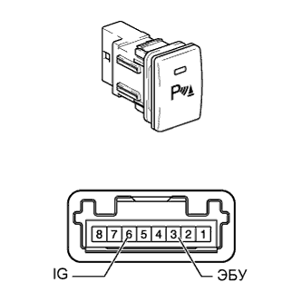
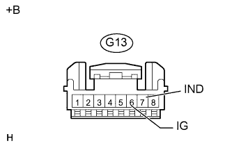

СЕНСОРНАЯ СИСТЕМА ПОМОЩИ ПРИ ПАРКОВКЕ TOYOTA (с 4 датчиками) > Цепь главного выключателя системы ультразвуковой локации |
| 1.ПРОВЕРЬТЕ ВЫКЛЮЧАТЕЛЬ ЗАДНЕГО УЛЬТРАЗВУКОВОГО ЛОКАТОРА ИЛИ СИСТЕМЫ УЛЬТРАЗВУКОВОЙ ЛОКАЦИИ В СБОРЕ |
|  |
Снимите выключатель заднего ультразвукового локатора или системы ультразвуковой локации в сборе (Нажмите здесь).
Измерьте сопротивление в соответствии со значениями, приведенными в таблице ниже.
| Контакты для подключения диагностического прибора | Положение переключателя | Заданные условия |
| 3 (ECU) - 6 (IG) | Нажат (ON (ВКЛ)) | Менее 1 Ом |
| 3 (ECU) - 6 (IG) | Не нажат (OFF (ВЫКЛ)) | 10 кОм или более |
|
| ||||
| OK | |
| 2.ПРОВЕРЬТЕ ЖГУТ ПРОВОДОВ И РАЗЪЕМ (ВЫКЛЮЧАТЕЛЬ ЗАДНЕГО УЛЬТРАЗВУКОВОГО ЛОКАТОРА ИЛИ СИСТЕМЫ УЛЬТРАЗВУКОВОЙ ЛОКАЦИИ - АККУМУЛЯТОРНАЯ БАТАРЕЯ И МАССА) |
|  |
Отсоедините разъем G13 выключателя заднего ультразвукового локатора или системы ультразвуковой локации.
Измерьте напряжение в соответствии со значениями, приведенными в таблице.
| Контакты для подключения диагностического прибора | Положение переключателя | Заданные условия |
| G13-6 (IG) - масса | Зажигание включено | 11-14 В |
| G13-6 (IG) - масса | Зажигание выключено | Менее 1 В |
Измерьте сопротивление в соответствии со значениями, приведенными в таблице ниже.
| Контакты для подключения диагностического прибора | Условие | Заданные условия |
| G13-7 (IND) - масса | Всегда | Менее 1 Ом |
| *a | Вид спереди разъема со стороны жгута проводов: (к выключателю заднего ультразвукового локатора или системы ультразвуковой локации) |
|
| ||||
| OK | |
| 3.ПРОВЕРЬТЕ ЖГУТ ПРОВОДОВ И РАЗЪЕМ (ВЫКЛЮЧАТЕЛЬ ЗАДНЕГО УЛЬТРАЗВУКОВОГО ЛОКАТОРА ИЛИ СИСТЕМЫ УЛЬТРАЗВУКОВОЙ ЛОКАЦИИ - ЭБУ ПРЕДУПРЕЖДЕНИЯ О НЕДОПУСТИМОЙ ДИСТАНЦИИ) |
Отсоедините разъем G13 выключателя заднего ультразвукового локатора или системы ультразвуковой локации.
Отсоедините разъем I1 ЭБУ предупреждения о недопустимой дистанции.
Измерьте сопротивление в соответствии со значениями, приведенными в таблице ниже.
| Контакты для подключения диагностического прибора | Условие | Заданные условия |
| G13-3 (ECU) - I1-8 (CSSW) | Всегда | Менее 1 Ом |
| G13-3 (ECU) - масса | Всегда | 10 кОм или более |
|
| ||||
| OK | ||
| ||